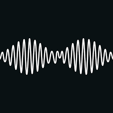

Estas canciones son consideradas mis favoritas ya que cada una de ellas cuenta con un ritmo agradable hacia mi sentido auditivo asi como tambien forman parte de mi genero musical favorito el cual es el rock pero en ocasiones tambien puede llegar a interesarme el shoegaze, cada una de estas canciones tiene un diferente significado y mensaje el cual tambien hace que se pisicionen entre mis favoritas debido al contexto detras de cada canción.